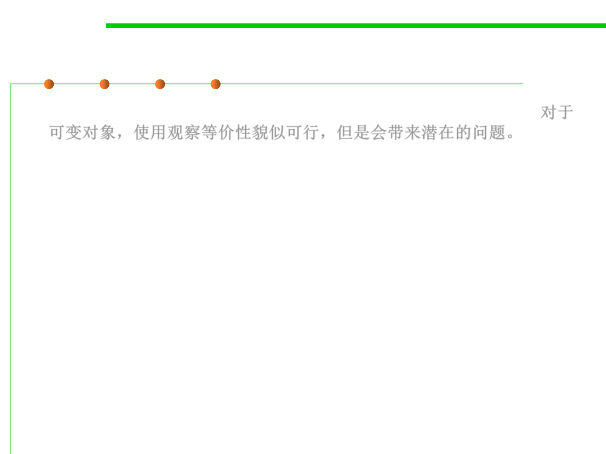

Equality in Java for mutable type
3.5 Equality in ADT and OOP
▪ For mutable objects, it’s tempting to use observational equality. 对于
可变对象，使用观察等价性貌似可行，但是会带来潜在的问题。
▪ Java uses observational equality for most of its mutable data types
(such as Collections), but other mutable classes (like
StringBuilder ) use behavioral equality.
▪ If two distinct List objects contain the same sequence of elements,
then equals() reports that they are equal.
▪ But using observational equality leads to subtle bugs, and in fact
allows us to easily break the rep invariants of other collection data
structures.